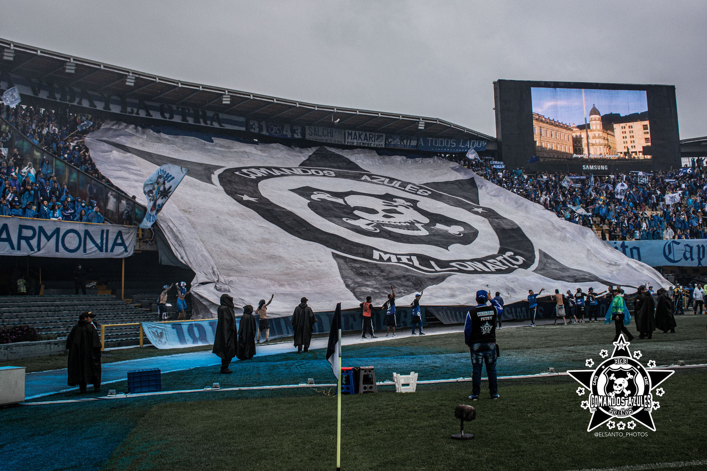
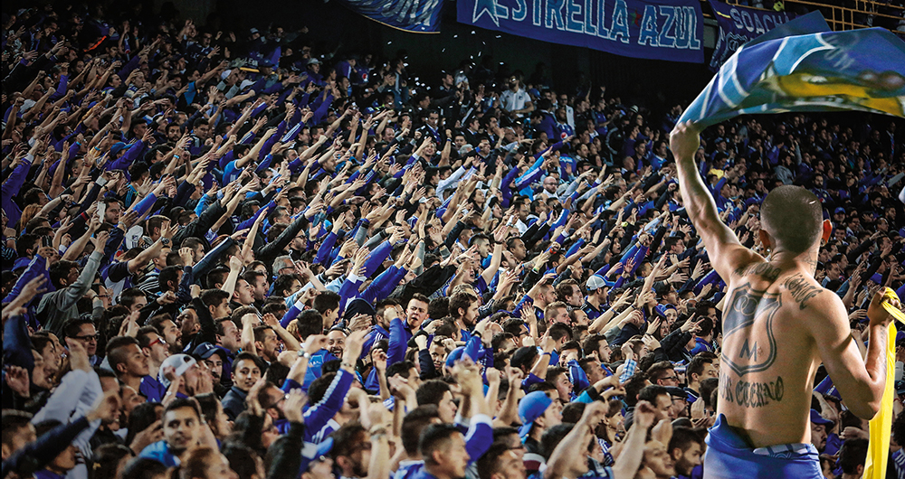
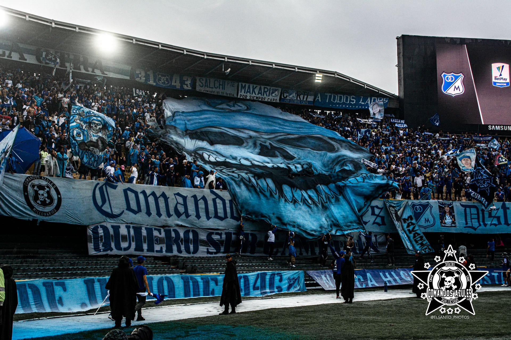

HISTORIAS DE LAS BARRAS BRAVAS DE MILLONARIOS
Bienvenidos a Aguante Bogotano
MILLONARIOS💙
COMANDOS AZULES DISTRITO CAPITAL
Amor Por La Camiseta MILLONARIOS
Historia De Comandos Azules

Comandos Azules! Los CA#13 que después de sus 10 años son ahora COMANDOS AZULES DISTRITO CAPITAL. La historia cuenta que por allá en el año 92 un grupo de SHARPS y de gente azul (aprox. 30)formaron una barra llamada BLUE RAIN que apoyaría al mejor y más grande equipo de toda la historia del fútbol en Colombia, el CLUB DEPORTIVO LOS MILLONARIOS. Se juntaron con unos locos de la ULTRAZUL y se fueron para la tribuna norte del Nemesio Camacho ..El CAMPIN.. con un nombre singular COMANDOS AZULES # 13. Cuatro años después de este glorioso año la barra de millos tuvo un crecimiento demasiado grande para contarlo. Vino el año 98 y seguíamos creciendo !!! Siempre hemos sido los más grandes... que hablen las imágenes !!!! Dónde estabas tu sureño puto cuando nosotros ya éramos más de 4.000?. Seguíamos apoyando a Millos con toda acompañándolo por toda Colombia. Esta grandeza solo se podría demostrar ante el mundo con un logro que solo los mejores de Sudamérica tenían.. un Disco Compacto, sería lo mejor para expresar el sentimiento que sentíamos hacia Millonarios y expresar en música toda la pasión que se siente al ser hincha albiazul. Se contacta a una banda bogotana,"LA BRIGADA", y se compone un disco de 27 canciones, la mayoría nuestras, otras adaptaciones de bandas argentinas. Pero se saco adelante el proyecto que unos soñaban con lograrlo pero que solo los CA#13 han podido hacerlo. Y ya va para el relanzamiento, porque las 4.000 copias que se sacaron a la venta se agotaron en un instante. Aunque en estos tiempos cualquiera hacen música no se olviden provincianos que fuimos los primeros y eso quedara escrito en la historia... Algunos pensaban que no podríamos nunca, pero para envidia de muchos, honor de otros tanto, humillamos a la porrita de Medellín que se había creado al ver nuestra grandeza, "los del sur" se llamaban. Teníamos información que eran los mismos del escandalo verde Bogotá, unos ñeritos que el parche PUNK CA..13 ya les había robado el frente con unos viejos barrigones de la barra Andrés Escobar que quisieron dárselas de malos en el 98 pasando por la norte y gritando sandeces en contra de los crestudos, estos que los dejaron sin banderas, sin zapatos, sin camisetas, y sin plata para volver a su Puta loma...En una tarde de domingo en la que esos putos venían a una verdadera ciudad, quisimos gastarles una broma. Y éramos tantos que coparíamos las dos laterales y los bautizaríamos "los de oriente" y como papá comando hace lo que quiere lo hicimos y lo haremos las veces que se nos dé la puta gana. Ya el amor por millonarios había sobrepasado las fronteras!!!!HICIMOS PRESENCIA EN USA!!!! ...Eso fue muy importante ya teníamos varias sucursales: FORZA AZURRA CALI, ANGEL AZUL B/MANGA, INVASION COMANDO PASTO, DUITAMA INFIERNO AZUL, CA#13 IBAGUE, CA#13 M/ZALES, POPAYAN PODER AZUL, EXTREMO NORTE ZIPA, CA#13 CAJICA-CHIA CA#13 FUSA-MELGAR. Hoy en día y como desde cuando iniciamos sabemos y sabíamos desde entonces que seriamos el fenómeno social de la década de los 90. Se nos ha caído la tribuna (42 HERIDOS), hemos estado de últimos (95)Hemos estado primeros (99) hemos corrido y luchado contra la tomba, hemos corrido y robado a cuanta porrita se nos a atravesado, hemos hecho tantas cosas ....y así no salgamos campeones nunca, sabemos que no somos hinchas de títulos, que lo nuestro es amor por la camiseta, por la institución y por lo tanto es una pasión que muchos quisieron copiar. Espero que reflexionen que por más que sean rojos o verdes... Recuerden algo ustedes no nacieron se hicieron!!! Gracias al ejemplo que les dimos los... COMANDOS AZULES # 13 NACIMOS PARA AMARTE VENIMOS A ALENTARTE

Blue Rain

Historia de la barra brava Blue Rain Millonarios!
"Hacia el segundo semestre del año 1992, aproximadamente 10 jóvenes, seguidores de Millonarios, empezaron a organizar una nueva barra que llamaron Blue Rain, la agrupación hizo presencia en la tribuna oriental general del Campín, buscando seguir las conductas de las barras de Argentina, Chile y Uruguay. En 1996 Beto, el líder de Blue Rain desde su organización, propuso trasladarse a la tribuna lateral norte ya que esa localidad les garantizaba tres beneficios: el costo de la boleta para entrar era la más barata de todas las localidades; la ubicación estaba más cerca del equipo cuando pisa el terreno de juego y además, lograrían la exclusividad de la gradería. Finalmente, el líder también planteó el cambio de nombre a Comandos Azules # 13. Entre 1997 y 1998, Beto empieza a motivar la formación de subgrupos dentro de la barra y así poder para afrontar, desde los barrios y los colegios, las nacientes barras de otros equipos: La Guardia de Santa Fe, el Disturbio de América y una filial en la capital de Los del Sur de Nacional. A finales de 1999 Beto fue destituido por un grupo que anteriormente lo apoyaba en su posición y se organiza una agrupación de doce personas que pretenden liderar la barra y para esto se dividen en dos secciones: una lidera las acciones de la lateral norte y la segunda hace lo propio en la tribuna sur. Sin embargo, la separación de estos grupos por tribunas y el obsequio de entradas a cada agrupación por parte del equipo – boletas que eran vendidas por ellos a un valor inferior del valor comercial – fueron motivos fundamentales para que se distanciaran pues cada agrupación logró un sustento económico propio. La separación definitiva se dio en septiembre de 2005 al presentarse una fuerte pelea, al interior de la lateral sur, en el entretiempo del partido contra el Deportes Quindío, promovida por el líder de norte, quien quería ratificar su dominio en los dos grupos. En consecuencia, los líderes de sur se apartaron de Comandos, reorganizando una nueva Blue Rain e hicieron su aparición en febrero de 2006, primero en oriental general y luego se posicionaron en lateral sur. Desde ese año, la barra ha tenido tres liderazgos: primero fueron Leo y Neme, quienes fueron remplazados, en 2008, por PQEK, cabeza del grupo Pasión Millonarienxe (P-MIXE) y respaldado por el grupo la Cueva; y en 2011, PQEK entrega su lugar y es asumido por una junta directiva de 12 personas que son reconocidas por su antigüedad en la barra, que a su vez son coordinadas por Chiqui y Borracho."
Ⓜ️
ⓂLOS VAGOS ME ENSEÑARON A QUERERTE, ALENTARTE SIEMPRE HASTA LA MUERTE
EMBAJADOR
-
Ⓜ️
ⓂMILLOS EN EL CORAZON, SIMPRE ESTARE EN LA TRIBUNA ALENTANDO HASTA QUE SALGA DE UN CAJON -
 Ⓜ️
Ⓜ️
ⓂMILLONARIOS COMO SIEMPRE DEJO TODO Y VENGO A VERTE, ESTA LOCURA NO ENTIENDE DE LEYES NI POLICIA, QUE SE MUERA ESOS PAISAS Y LA PUTA GUARDERIA -

Ⓜ️
ⓂLOS TECNICOS SE VAN, LOS JUGADORES PASARAN TU HINCHADA QUEDARA Y NUNCA TE VA ABANDONAR -
Ⓜ️
YO SE MUY BIEN QUE PASARE LA VIDA ENTERA SIGUIENDOA MILLOS EN LAS MALAS Y EN LAS BUENAS, SIEMPRE ALENTAANDO PARA QUE SALGAS CAMPEON, NO COMO EL VERDE NI LOS PUTOS DEL LEON
Ⓜ️
MILLONARIOS.D.C BLUE RAIN colombia AGUANTE BOGONTANOSML azul FUTBOOL COLOMBIANO TODOS POR LA MISMA PASION LOCURA BARRAS BRAVAS AMOR POR LA COMISA Bogota D.C CADC LOCURA Y PASION
Inspiracion




Sígueme
Subscribete
Enter your e-mail below and get notified on the latest blog posts.